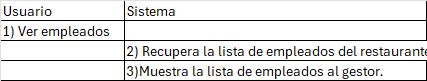
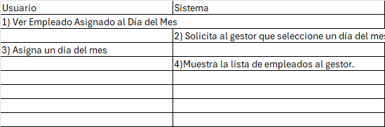
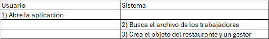
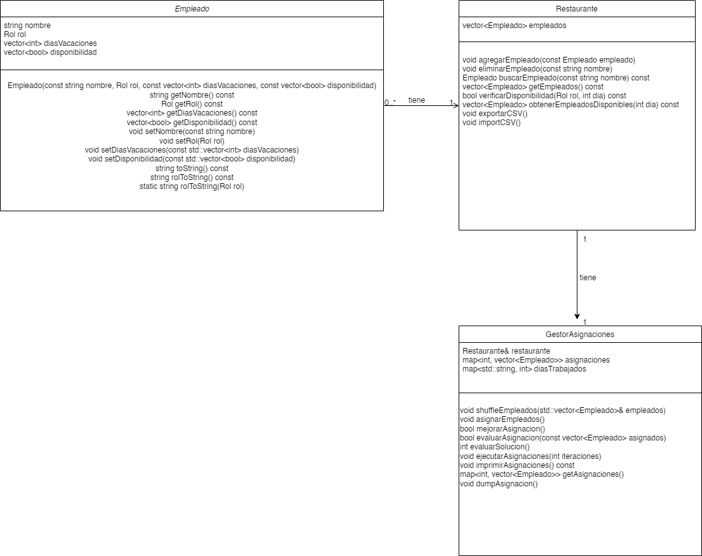
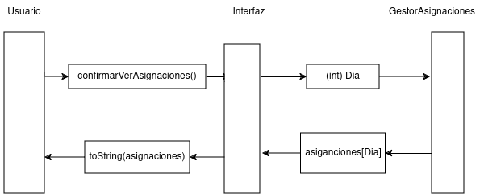
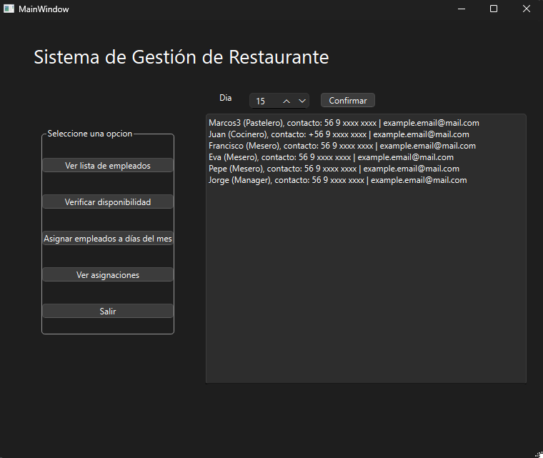
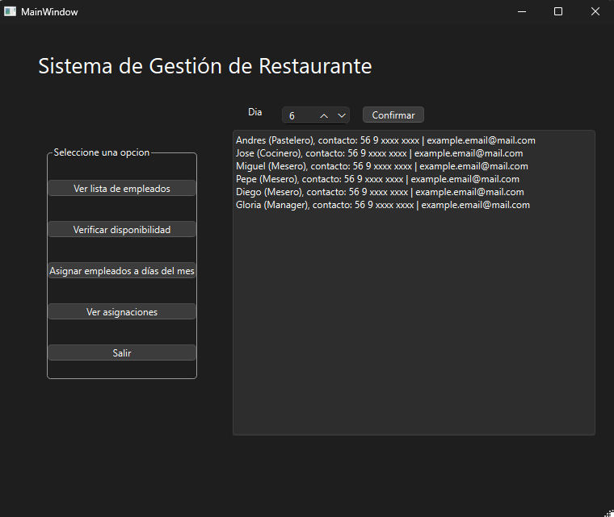
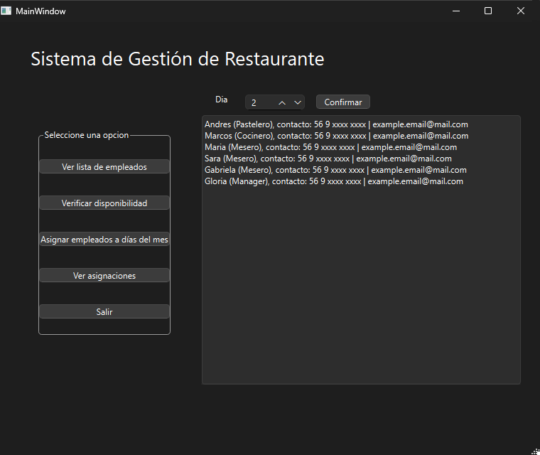

Informe del Proyecto de Gestión de Empleados para Restaurante
1. Descripción del Problema
El proyecto busca resolver el problema de asignación de empleados en un restaurante, asegurando que los roles críticos se encuentren cubiertos para el funcionamiento diario. Este problema requiere considerar los roles de los empleados y su disponibilidad.
2. Análisis del Problema
El sistema de gestión de empleados del restaurante debe tener en cuenta varios elementos clave:
- Empleado: Cada empleado tiene un rol específico, días de disponibilidad y días de vacaciones.
- Restaurante: El establecimiento requiere una cobertura adecuada de roles cada día, por ejemplo: 5 meseros, 2 cocineros, 1 pastelero y 1 manager.
- Gestor: El centro de gestión debe considerar los datos de los empleados y las necesidades del restaurante para cumplir con los requerimientos diarios de funcionamiento.
Interacciones con el Medio Externo:
La interacción externa consiste en cómo se proporciona la información de los empleados y las necesidades del restaurante, posiblemente en forma de documento. El resultado del proyecto es una asignación diaria optimizada de empleados que asegura una cobertura adecuada de los roles en el restaurante.
3. Definición de Requerimientos
Casos de Uso
1) Ver Empleados
Nombre: Ver Empleados
Propósito: Permitir al gestor del restaurante ver una lista de todos los empleados registrados en el sistema.
Actores: Gestor del restaurante.
Pre-condiciones: El archivo de empleados ya tuvo que ser leido por el programa.
Evento: El gestor selecciona la opción "Ver Empleados" en la interfaz.
Curso normal de eventos:

Curso alternativo de eventos: Si el sistema no puede recuperar la lista de empleados, muestra una lista vacia.
Requerimientos no funcionales:
- El sistema debe mostrar la lista de empleados en menos de 3 segundos.
- La interfaz debe ser intuitiva y fácil de usar.
Autor: Tomas
2) Ver Empleado Asignado al Día del Mes
Nombre: Ver Empleado Asignado al Día del Mes
Propósito: Permitir al usuario ver qué empleados están asignados a un día específico del mes.
Actores: Gestor del restaurante.
Pre-condiciones: El archivo de empleados ya tuvo que ser leido por el programa.
Evento: El gestor selecciona la opción "Ver Empleado Asignado al Día del Mes" en la interfaz.
Curso normal de eventos:

Curso alternativo de eventos: Si el sistema no puede recuperar la lista de empleados asignados, muestra un mensaje de error al gestor.
Requerimientos no funcionales:
- El sistema debe mostrar la lista de empleados asignados en menos de 3 segundos.
- La interfaz debe ser intuitiva y fácil de usar.
Autor: Pablo
3)Asignar Empleados
Nombre: Asignar Empleados
Propósito: Asignar empleados a cada día del mes, considerando disponibilidad y vacaciones.
Actores: Gestor del restaurante.
Pre-condiciones: El gestor debe estar autenticado en el sistema. Los datos de disponibilidad y vacaciones de los empleados deben estar actualizados.
Evento: El gestor selecciona la opción "Asignar Empleados" en la interfaz.
Curso normal de eventos:

Curso alternativo de eventos:
- Si el sistema no puede realizar la asignación inicial, muestra un mensaje de error al gestor.
- Si el sistema no puede optimizar la asignación, muestra un mensaje de advertencia al gestor.
Requerimientos no funcionales:
- El sistema debe completar la asignación en menos de 5 segundos.
- La interfaz debe ser intuitiva y fácil de usar.
Autor: Nicolas
4. Diseño
Diagrama de Clases

Diagrama de Secuencia

6. Pruebas
Prueba 1: Asignación de Empleados con Disponibilidad Completa sin Vacaciones

La captura de pantalla muestra la asignación exitosa de empleados para todos los días del mes. Como los empleados tienen disponibilidad completa y no tienen vacaciones, el sistema pudo asignar todos los roles críticos para cada día sin problemas.
Prueba 2: Asignación de Empleados con Disponibilidad Parcial y sin Vacaciones

La captura de pantalla muestra que el sistema pudo asignar empleados adecuadamente según su disponibilidad parcial. Los días que faltaban empleados se identificaron correctamente y se mostraron los mensajes de advertencia necesarios.
Prueba 3: Asignación de Empleados con Disponibilidad Completa pero con Vacaciones Programadas

La captura de pantalla muestra que el sistema respetó los días de vacaciones de los empleados y no los asignó en esos días. Los roles críticos se cubrieron adecuadamente para los días sin vacaciones.
Dificultades Encontradas y Soluciones
- Asignación Desigual de Roles: Inicialmente, la asignación no tenía en cuenta adecuadamente los roles específicos, lo que resultó en días sin la cantidad requerida de ciertos roles. Se implementó un control más estricto sobre los roles requeridos para cada día, asegurando que todos los roles críticos se cubran.
- Disponibilidad Parcial Mal Manejada: Empleados con disponibilidad parcial eran asignados en días no disponibles. Mejorar la verificación de disponibilidad antes de la asignación para asegurar que los empleados solo sean asignados en días en los que están disponibles.
- Vacaciones No Respetadas: Los días de vacaciones de los empleados no se consideraban correctamente, lo que resultaba en asignaciones en días de vacaciones. Agregar verificaciones adicionales para los días de vacaciones durante el proceso de asignación para asegurar que los empleados no sean asignados en esos días.
Bugs Presentes
- Asignación Redundante: En algunos casos, empleados se asignan repetidamente a diferentes días aunque ya hayan alcanzado el máximo de días permitidos. Pendiente de solución. Se está trabajando en una mejora de la lógica de asignación para evitar redundancias.
- Optimización Ineficiente: El algoritmo de optimización a veces no encuentra la mejor solución posible debido a limitaciones en el enfoque de hill climbing. Pendiente de solución. Se está evaluando la implementación de técnicas adicionales de optimización para mejorar la eficiencia.
Link del repositorio
https://github.com/Nicolas-Nito/proyecto-intro.poo/archive/refs/tags/release.tar.gz